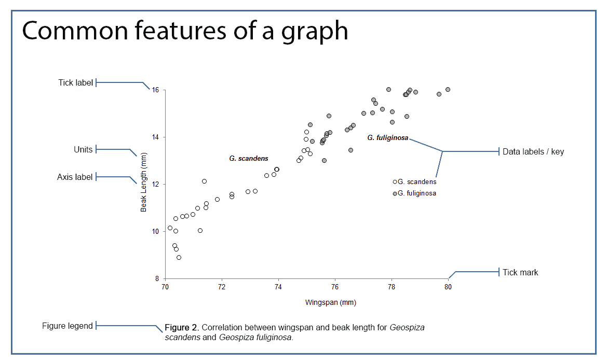

Hyperparameters in Q-Learning
Ainda considerando o exemplo a implementação do TaxiDriver, responda as perguntas abaixo.
Para responder as questões abaixo utilize as implementações do TaxiDriverGym.py, que está no diretório src/part_02 e o arquivo QLearning.py que você implementou na atividade anterior.
Manipulando \(\alpha\) e \(\gamma\)
-
Se \(\alpha\) for um valor muito próximo de zero? Explique o comportamento encontrado.
-
Se \(\gamma\) for zero? Explique o comportamento encontrado.
Para fundamentar a sua resposta, use os plots gerados na pasta results depois do treinamento.
Considerando uma escolha de ação sempre aletatória
O que acontece se a escolha das ações em cada estado for sempre aleatória? Ou seja, se a função select_action ao invés de ser definida como abaixo:
def select_action(self, state):
rv = random.uniform(0, 1)
if rv < self.epsilon:
return self.env.action_space.sample() # Explore action space
return np.argmax(self.q_table[state]) # Exploit learned values
É definida assim:
def select_action(self, state):
return self.env.action_space.sample() # Explore action space
Qual o comportamento do agente? Novamente: use os plots gerados na pasta results depois do treinamento para fundamentar a sua resposta.
Considerando um agente que nunca explora novas ações
O que acontece se a escolha das ações em cada estado for sempre buscando a melhor ação? Ou seja:
def select_action(self, state):
return np.argmax(self.q_table[state]) # Exploit learned values
Sumarizando os resultados através de imagens
Como podemos sumarizar os diferentes resultados através de imagens?
Neste momento, você já deve ter percebido que uma ferramenta muito útil para visualizar e sumarizar o aprendizado do agente são gráficos que mostram a evolução de alguma métrica ao longo dos diversos episódios.
-
Quais foram as métricas utilizadas no caso do
TaxiDriver? -
Quais foram os hiperparâmetros utilizados?
-
O aprendizado dos agentes implementados para este caso convergem rapidamente?
-
O desempenho do agente se mantem ao longo dos episódios?
Atividade
Faça uso de uma única imagem para sumarizar o aprendizado do agente. Você deve escolher a melhor métrica para o eixo \(y\) do gráfico. O eixo \(x\) deve ser a quantidade de episódios utilizado no treinamento. Você também deve definir qual é o melhor zoom (foco) no gráfico. Crie um documento que tem esta única imagem e a legenda dela.
Na legenda é necessário ter o título da imagem e um texto explicativo. O texto explicativo pode ser longo e deve ter as informações sobre os hiperparâmetros utilizados.
O gráfico deve possuir 3 linhas distintas. Cada uma destas linhas deve apresentar uma variação possível considerando os hiperparâmetros \(\alpha\), \(\gamma\) e \(\epsilon\). Deverá ficar a critério do estudante quais valores utilizar.
Um exemplo de imagem que sumariza dados ou apresenta resultados de experimentos é apresentada abaixo:

Todas as informações relevantes para entender o resultado do treinamento precisam estar auto-contidas na imagem e na legenda da imagem.
Um documento com esta imagem e legenda deve ser entregue via Blackboard até o dia 02/03/2023. A atividade já foi criada no Blackboard e o nome dela é Q-Learning with hyperparameters. Esta atividade é individual.
Rubrica de avaliação
| Conceito | Descrição | | A+ | Entregou uma única imagem com legenda. O texto da legenda possui toda a informação necessária para entender os resultados alcançados pelo experimento. A imagem é uma imagem que consegue mostrar a diferença entre os hiperparâmetros escolhidos | | C | Não entregou uma única imagem |
Um exemplo de gráfico muito bem feito 
Segue abaixo um exemplo de gráfico muito bem formatado e completo. Este gráfico foi feito pela Letícia.